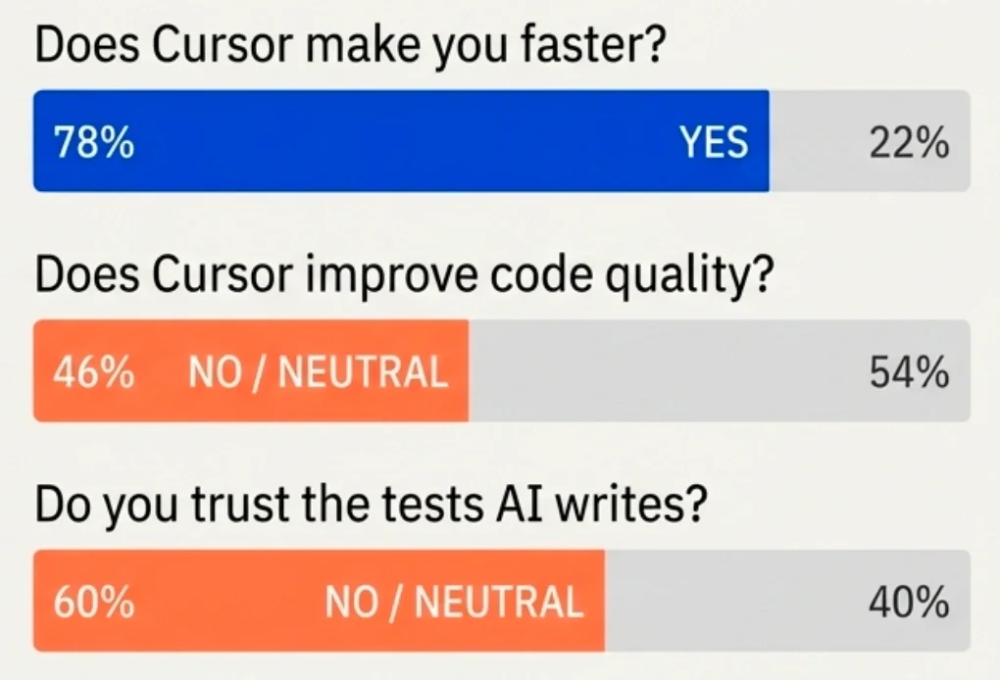

$ initializing presentation.exe
[░░░░░░░░░░░░░░░░░░░░] 0%
Did AI Really Make Us Faster?
Press SPACE to begin
Senior Software Engineer @ Apollo.io
14 years in software engineering
@przemuh | przemuh.dev
Przemysław Suchodolski
@psuchodolski
ChatGPT this, ChatGPT that...
please wake me up when all the dust has settled 😴
Apr 5, 2023 · 3:42 PM
💬 0 🔁 0 ❤️ 1
— me, 2023
The Revolution
Tab autocomplete
Co-pilot
Agents
The Promise
@ APOLLO.IO
The Scale
250+
engineers
10yrs
old monolith
+
// CHAPTER 01
Phase 1
Cursor
Windsurf
CodeRabbit
Phase 1 — Result
85%
Weekly Active Users
106% of goal
90%+
Monthly Active Users
Everything felt faster.
// CHAPTER 02
Phase 2 — Reality
PERCEIVED
velocity
SYSTEM
velocity
Phase 2 — Divergence
pre-AI baseline
FRONTEND
3–4x ↑
16–20 PRs/mo
BACKEND
—
no correlation
Backend Power Users: higher self-reported benefits — but quantitative metrics stayed flat.
Phase 2 — Divergence
Multiple comprehensive .cursorrules files
1 basic .cursorrules file
Well-documented component libraries
Sparse documentation
Standardized patterns and conventions
Less standardized — more modularity via controllers, models, class hierarchy
Domain-specific prompts
Infrastructure complexity not well-captured
Super power users who mastered context
No super power users
Phase 2 — Reality
Phase 2 — Debt
Tests validated incorrect behavior
Random mocks boosted coverage without testing meaningful functionality
AI-generated code merged without adequate review
Debt accumulated faster than anticipated

// CHAPTER 03
Phase 3 — Measurement
Phase 3 — Measurement
We built a custom pipeline in Snowflake joining three datasets.
USAGE
Raw Cursor logs
Agent requests vs. Tab completions
IMPACT
GitHub data
Cycle time + revert rates
TRUST
Surveys
Per-PR impact scores + quarterly surveys
Phase 3 — Culture
Peer-led initiative.
Not top-down mandate.
Voluntary champions with manager support consistently outperformed mandated rollouts.
// I promised no hype. But look at this.
$ result.final
1.15x
* across the entire engineering organization
Your Turn
1.15x is not the point.
@przemuh | przemuh.dev
Apollo.io